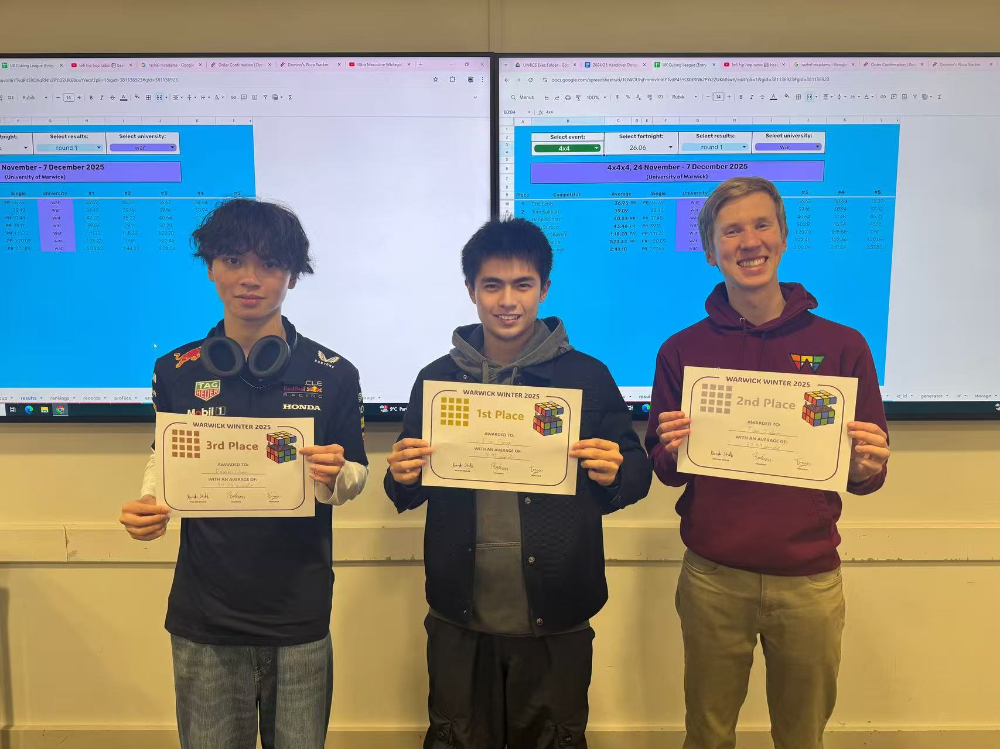
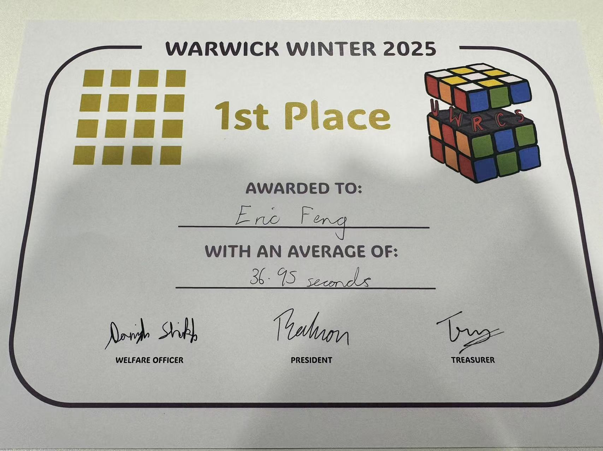

机器学习数学理论
研究学习模型背后的严格数学性质，包括优化、泛化、 渐近极限与尺度扩展规律。
University of Warwick · Mathematics
英国华威大学数学系本科生
我的研究方向是机器学习数学理论，关注神经网络训练背后的严格数学结构。 在刘方辉教授指导下，我目前研究 μP 下 Warmup–Stable–Decay（WSD） 学习率调度在不同网络宽度与训练步数之间的迁移规律。
Mathematics · Machine Learning Theory
我是英国华威大学数学系本科生，未来研究领域聚焦于机器学习数学理论。 我主要关注机器学习模型背后的严格数学性质，包括神经网络理论、 优化动力学、无限宽极限、超参数迁移与尺度扩展规律。
刘方辉 现为我的正式科研导师。我们的当前研究聚焦于 μP 下三参数 WSD 学习率调度的迁移： 利用累计学习率归一化，将不同训练步数放在统一的动力学坐标中， 进而研究如何从较短训练的完整目标函数预测更长训练的目标函数，并衔接跨宽度迁移。
在理论研究中，我尤其关注能够通过概率、线性代数、优化与渐近分析 转化为明确数学结构的问题，并希望对神经网络训练现象给出严格、 可验证的理论解释。
研究学习模型背后的严格数学性质，包括优化、泛化、 渐近极限与尺度扩展规律。
关注参数化、特征学习、无限宽极限以及超参数的跨宽度稳定性。
研究 WSD 调度及其最优参数在不同网络宽度与训练步数之间的迁移规律。
使用优化、概率、谱分析与渐近工具研究训练动力学、稳定性和确定性极限。
本研究的核心是提出一种以累计学习率（cumulative learning rate）为基础的 WSD 调度归一化方法：将不同训练步数的调度置于统一的动力学坐标中， 同时以 final-to-peak ratio 和 decay fraction 保留调度形状， 从而避免直接比较不同训练预算下不再等价的原始学习率参数。
基于这一归一化坐标，我们推导了完整三参数 WSD 目标函数的有限步展开及一致二阶余项， 并严格证明：单个较短训练步数上的完整参考目标函数一般不足以确定更长训练步数上的目标； 而在相应正则性条件下，两个较短训练步数的参考目标函数可以以二阶精度预测完整的目标 WSD 函数。 进一步将跨步数预测与 μP 下固定训练步数的跨宽度稳定性衔接。
与仅外推一个最优 peak learning rate 不同，本项目直接研究三参数 WSD 调度的 完整目标函数，并回答：为什么一个短训练 reference 一般不够， 以及两个 reference 如何预测更长训练步数下不同调度的表现。
这一框架从数学上解释了短训练参考信息为何能够预测更长训练预算下的完整调度表现， 并为减少目标规模上的重复调参提供理论依据。
本项目研究两步深度线性 µP 网络中，宽度极限损失关于学习率的 全局几何。核心问题是：当不同宽度下的损失曲线趋于稳定后， 最优学习率是否会被唯一确定。
结果表明，唯一性是稳定的泛型现象，但并非无条件成立； 在例外情形下，应追踪完整的最优解集合而非任意单个学习率。
我是一名四阶魔方速拧选手，参加过 WCA 官方比赛。 我的官方成绩包括四阶单次 34.22 秒、平均 41.46 秒。 魔方主页见 这里。
四阶魔方复原视频


Email： eric_feng2006@outlook.com